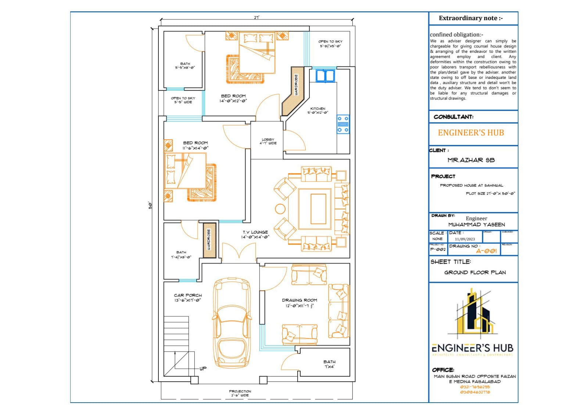

Residential House Project: Crafting a Dream Home
As the CEO of Al-Hamad Heaven Builders, I had the privilege of leading the Residential House project, a significant endeavor located in the prestigious Behria Town Phase V, Islamabad. This project was an exciting opportunity to apply our expertise in residential construction and deliver a high-quality home within the stipulated timeline of five months.
With a project valued at 20 million PKR, precision and coordination were paramount. I worked closely with our team of architects, contractors, and the client to translate the blueprint into reality. From laying the foundation to installing the roof, I oversaw every phase, ensuring that the materials—such as reinforced concrete, bricks, and steel—met the highest standards. Utilizing tools like AutoCAD for design verification and MS Project for scheduling, we maintained a tight grip on progress, keeping the project on track despite occasional supply chain hiccups.
One of my key contributions was documenting the construction process through on-site photographs. These images captured critical stages—foundation pouring, wall erection, and finishing work—showcasing the quality of workmanship and adherence to design. This visual record not only served as a testament to our team’s efforts but also became a valuable tool for client updates and future reference. It highlighted our role in supervision, coordination, and project management, reinforcing our growing expertise in residential construction.
A significant challenge was managing the workforce efficiently under a tight deadline. With a team of 25 skilled workers, we implemented daily briefings and task checklists to optimize productivity. Quality control was another focal point; we conducted regular inspections to ensure that structural elements like beams and columns aligned with seismic safety standards, given Islamabad’s location in a seismically active zone. This attention to detail earned praise from both the client and the project consultant.
Client communication was integral to this project. We provided weekly updates, addressing concerns and incorporating feedback to ensure the final product aligned with their vision. The house featured modern amenities—open-plan living spaces, energy-efficient windows, and a sleek rooftop terrace—blending functionality with aesthetic appeal. This project sharpened our ability to balance technical precision with client satisfaction, a skillset we continue to refine.
Completed in February 2022 after starting in September 2021, the Residential House project stands as a testament to teamwork and dedication. It was a rewarding experience that enhanced our capabilities in residential construction, project coordination, and stakeholder management, paving the way for future endeavors in crafting homes that inspire.
Key Points
- Location: Behria Town Phase V, Islamabad
- Company: Al-Hamad HEAVEN BUILDERS
- Budget: 20 million PKR
- Start Date: September 2021
- Duration: 5 months
Project Highlights
- Completed on schedule despite supply challenges
- Documented progress with detailed photographs
- Met seismic safety standards for structural integrity
- Incorporated modern, energy-efficient design features
- Received client appreciation for quality and communication
Customer Views & Comments
"The water tank has been a game-changer for our village. We now have a reliable water supply, and the team’s efforts in educating us about maintenance were commendable." – Ali Hassan, Local Resident
"Al-Hamad Heaven Builders delivered beyond expectations. The project was completed on time, and the quality is outstanding. Their focus on safety and sustainability is truly impressive." – Sana Malik, Client Representative
"As a consultant, I appreciated the team’s professionalism and attention to detail. The use of advanced tools and eco-friendly practices made this project a standout." – Engr. Bilal Ahmed, Project Consultant